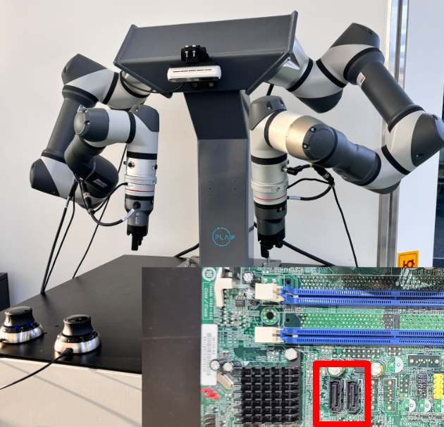
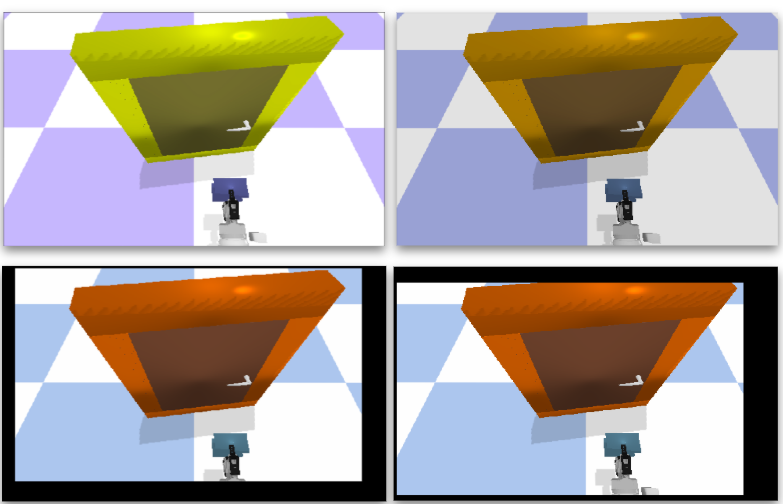
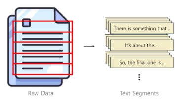

|
Byeongjin Kang I'm an undergraduate in Sungkyunkwan University, majoring in Computer Science and Engineering. I'm interested in Reinforcement Learning and Robotics, especially in enabling robots to behave like humans. Currently, I'm working as an intern at RLLAB advisde by Prof. Youngwoon Lee. previously, I worked as an intern at CSI LAB advised by Prof. Yusung Kim. |

|
ResearchThe goal of my research is to "robots with intelligence", enabling embodied agents to achieve self-improvement akin to human learning. In other words, I aim to develop agents that can autonomously understand their own capabilities, adapt to new tasks, and continuously refine their skills. My current research focuses on the following key approaches:
|
Research Experinces and Projects |
|  |
Complex Long horizontal task with Online Reinforcement Learning
Byeongjin Kang, CSI Lab team members CSI LAB research internship project This project explored online reinforcement learning for a complex long horizontal task using a main board and cables. It involved setting up a robust learning environment, efficient data collection, and training with pixel-based RLPD. While full success in online learning was not achieved, the project provided valuable insights into the challenges of real-time adaptation and laid the groundwork for future advancements in online reinforcement learning. |
|  |
Visual Robustness in Imitation Learning
Byeongjin Kang, CSI Lab team members CSI LAB research internship project This project focuses on applying action imitation learning to robotic manipulation tasks, aiming for visual robustness. It tests variations in the number of cameras and viewpoints while leveraging various vision techniques to ensure resilience against visual disturbances such as color changes, brightness variations, and blur in different environments. Experiments demonstrated a significant improvement in success rates, with the baseline model ACT achieving 10% in the training environment and 80% in different test environments. |
|  |
Efficient Long Text Summarization Using an sLLM Pipeline
Byeongjin Kang, HoJae Kim, HunTae Kim, Joonyeol Choi, Minsu Kim, Saehun Chun project paper / code This project develops a compact, edge-deployable LLM for summarizing video lecture transcripts efficiently. Instead of direct fine-tuning, it uses a segmentation-based approach, dividing transcripts into semantically related segments via cosine similarity. These are clustered using methods like KNN and DBSCAN, then summarized by a specialized 500M-parameter LLM. This approach reduces computational demands while maintaining high-quality summaries. Evaluation with ROUGE and BERTScore shows superior performance over baseline models. |
Website template from Jon Barron.